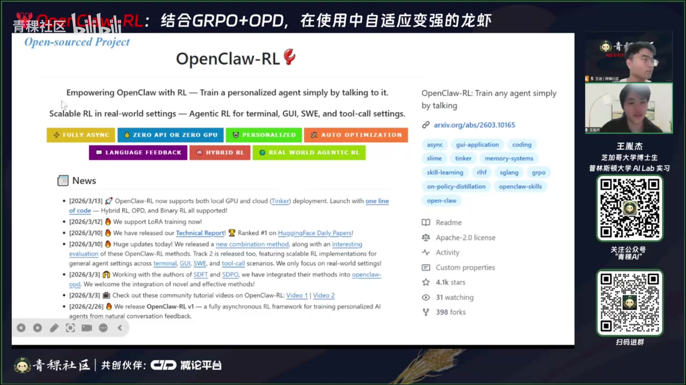
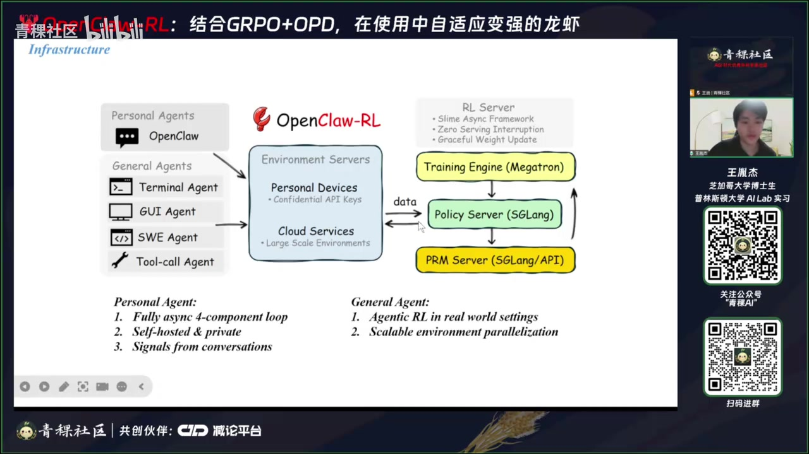
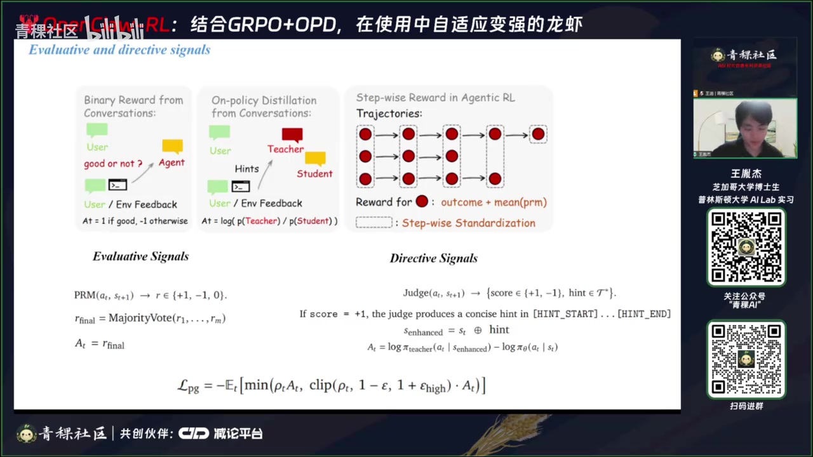
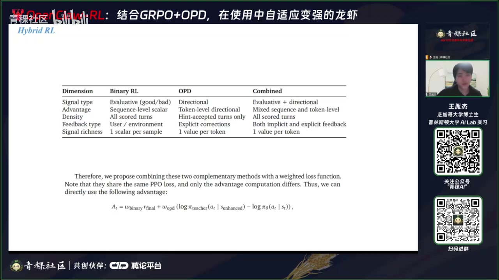
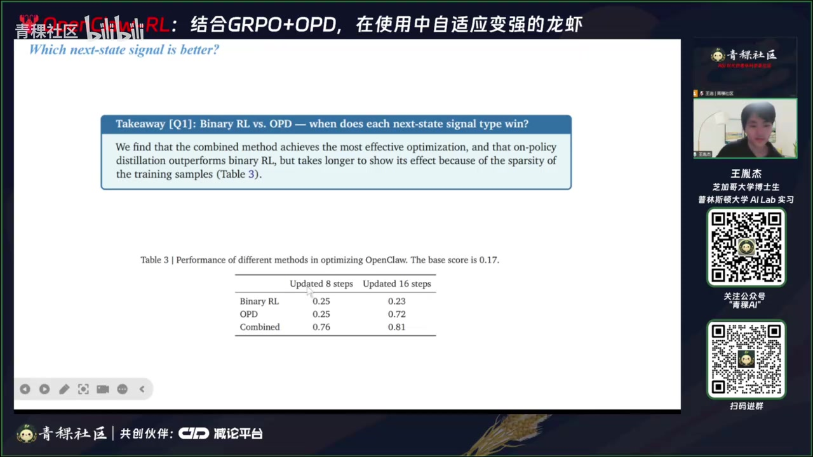

01｜OpenClaw-RL项目概述与反馈机制设计
00:00:01王一杰 · 主讲人好的，感谢邀请。我来自芝加哥大学，叫王一杰，目前是博士二年级学生，与王文迪老师的库林实验室合作比较紧密。我本科毕业于中国科学技术大学少年班数学专业，现在从事强化学习方向的研究，主要探索大语言模型（LM）与Agent监测等强化学习算法。之前做过语言模型强化学习的DrM2后训练，也做过通用Agent的强化学习；最近的工作是OpenClaw，聚焦于计算机使用（computer use）场景下的强化学习。
00:00:42王一杰 · 主讲人接下来介绍本次项目：OpenClaw-RL，副标题是‘Any agent simply by talking’。这是一个开源项目。当时设计时将工作分为两部分，总目标一致：用强化学习提升计算机使用能力。第一部分是对personalized agent做强化学习，更聚焦于2F（two-factor）及AI在个人生活场景中的应用；其核心算法设计是尽可能从真实对话（conversation）中提取强化学习所需的训练信号——这也是今天重点介绍的部分。

00:01:30王一杰 · 主讲人第二部分由库林实验室完成，针对最常见的计算机使用任务开展强化学习，目标是实现可扩展（scalable）的大规模强化学习。它聚焦于典型computer use setting，例如terminal操作、云上部署的大规模环境支持，以及PM（Process Monitor）模块。该项目已开源，欢迎大家到GitHub仓库贡献代码；目前已有不少同学参与各类贡献。
00:02:06王一杰 · 主讲人例如，项目发布一周后，SDP-U的作者就在上面提交了PR，修改了部分代码并成功合并。之后我们积极更新，迅速发布了技术报告（tech report），分析了最初发布的两个主要方法存在的不足，并提出了一种新方法；实验证明该方法优化效果显著。后续我们也扩展了对inf系列模型的支持，例如Llama；目前Qwen3.5也正在逐步被支持。
00:02:45王一杰 · 主讲人此外，我们已将系统部署到K8s（Kubernetes）；近期也在评估Fireworks平台，目标是尽可能部署到对无GPU用户更友好的产品环境中。这里是一个demo视频：右侧较暗区域是backend server，整体架构独立分为三部分——policy模块、PM（Process Monitor）模块，以及training engine（即训练后端）。用户只需将模型部署在该backend server上即可使用OpenClaw。
00:03:25王一杰 · 主讲人用户设置好confident API后，每次调用时，policy model会生成回复；在环境返回下一个状态后，系统立刻接收上一步输出对应的任务信号。policy与PM彼此解耦、异步运行，避免因PM输出延迟导致policy卡顿。PM可对上一步过程做简单评估（evaluation），也可能执行summary——这部分将在后续算法介绍中展开。
00:04:08王一杰 · 主讲人然后你在每次得到一条源数据，即 response，以及 PM 给的训练数据 reward 之后，就会生成一个完整的训练样本，将其加入训练队列；直到队列数量达到预设阈值，系统会自动在后台异步启动训练。通过这种方式，PO 模型可以持续在后台被训练，且不会影响正常 PO 模型对用户 API 调用的推理响应。通常只有在模型更新时，原模型会短暂暂停约两三秒，但基本不影响用户体验，因为用户与 Agent 的对话本身是一个较长期的过程。
00:04:50王一杰 · 主讲人所以总体来说，你持续使用你的 Agent，它就会变得越来越强、越来越个性化。这边是我们整个框架的架构图。关于 Agent，我们将其分为两部分：一部分是 Person Agent，这里以 OpenClaw 为例，代表部署在你本地计算机上的 Agent；其运行环境即你的本地电脑，通过 K8s 在 21 上部署，并通过 API 连接到你的本地机器。
00:05:31王一杰 · 主讲人而 21 上我们采用的是异步框架——训练是异步进行的；对于 S7 的 PM，我们目前仅支持 AI 通过 API 调用完成数据传输，从而将数据传送到 21 上。我们还开发了一个 CloudExtension，用于对每一条传入 21 的数据进行分类，以支持更精准的针对性优化。这是 OpenClaw 这类 Personal Agent 的优化部分，核心在于如何从真实对话中自动提取训练信号，无需用户主动提供任何显式打分反馈。

00:06:17王一杰 · 主讲人比如当前 GPT 可能会提供 preference pair，或在整条对话 session 结束后询问你是否有效；也可能让你对回复打分（如 0–3 分）。而我们的方法则尽可能避免所有人工打分，完全依赖对话上下文自动推断反馈信号。最后是 General Agent 的大规模通用训练，聚焦于可控的 setting。我们将其细分为 Terminal Agent、GUI Agent、Shell Agent 和 App Agent 四类。
00:06:52王一杰 · 主讲人我个人认为最主要的 computer-use setting 就是 Terminal 和 GUI 场景。我们的环境可部署在云上，支持大规模多租户环境及虚拟化执行环境，从而提升训练效率。接下来介绍 OpenClaw-2 的主要训练算法。最初 report 发布时，只公开了两种方法；由于当时方案尚属第一波实验，这些方法尚未完成充分测试。它们分别是基于 signals 和 direct-signals 作为主要信息源的训练方式。
00:07:35王一杰 · 主讲人后来在后续 report 中，我们发现并提出了一种更优的方法。现在先说明最初发布的这两种方法：它们均基于 next-state signal，即在模型完成一次回复、进入下一个状态后，对该次动作效果进行打分。这类信号的核心逻辑是：由下一个状态反推上一步动作的效果好坏。例如，一名学生正在用终端写作业，但对该领域知识掌握不足，他就会要求 OpenClaw 尽可能给出具体解释，包括每个步骤的解析过程及所需前置知识。
00:08:24王一杰 · 主讲人如果 OpenClaw 刚上线时没有完整说明这些知识，学生会给出一些反馈，比如表示‘目前给我的解答我不喜欢’，或带有更多情绪化的表达。后台的 PM 会自动进行价值判断，评估上一轮 OpenClaw 给出的回答是否被用户喜欢——这作为一种‘next state’类型的反馈。另一种反馈可能来自环境，例如模型在 Terminal 中执行代码时出现报错，或代码成功运行；这类 Terminal 中的反馈也可被 PM 总结为‘好’或‘坏’的反馈，即判断该回答是好还是坏。
00:09:16王一杰 · 主讲人第二种 signal 更有意思，它是有方向性的：不仅告诉模型上一轮生成结果是好还是坏，更从用户的反馈中提取出如何优化上一轮输出的具体信号。例如，学生用完 OpenClaw 后，因回答过于简短而不满意，提出‘希望回答更具体，并补充针对性的前置知识’；此时 PM 将这段话总结提炼为一条提示词（prompt），并将其加入到上一轮生成前的原始提示词中。
00:10:07王一杰 · 主讲人这就构成了一种标准的 solution 操作：它提供的是有方向性的优化指引，明确高层策略应朝哪个方向调整。我们在撰写 technical report 时进行了测试，发现这两种方法各自的效率都很低——它们各有缺点，但好处在于这些缺点可以互补。因此我们直接将两种方法结合起来（combining them），结果训练效率显著提升。接下来通过示例图进一步分析这两种方法的具体实现细节及工程注意事项。
00:10:50王一杰 · 主讲人首先，所有 signals 都源自 conversations 中的 binary reward。基本交互流程是：用户与 Agent（A）交互，A 输出后，下一步由用户或环境（如 Terminal）给出反馈。PM 基于用户反馈和环境反馈，独立判断 A 上一步的回答是否‘good enough’；该判断过程会重复多轮。
00:11:23王一杰 · 主讲人最终输出一个标量 reward（sc），取值为 +1、−1 或 0：+1 表示正面反馈，−1 表示负面反馈，0 表示中性（neutral），或判断不明确的情况——这是一种基础的数据质量控制（data quality control）机制，因为并非每一轮都能收集到高质量数据。在独立判断多轮后，我们采用多数投票（majority voting）来提升判断准确性，并将该投票结果作为最终 reward。需注意的是，这不同于 PPO（如 G2PO），后者每个 state 对应多个动作，每个动作均有 reward；而本方案中每个 group 仅含一个样本，因此直接将 advantage 视为 reward。我们设计成这种一一对应的操作，是为了尽可能保持中心化。

00:12:11王一杰 · 主讲人这里的组内只有一个样本，因此直接把优势值作为奖励，这也是我们把操作设计得尽量集中化的原因。优化时，仍由正在训练的 Agent（student）与用户对话。收到用户下一步反馈后，系统把反馈整理为提示（hints），加入上一轮的提示词中。
00:12:50王一杰 · 主讲人这个 policy model agent 在生成 response 之前，会将提示词加入，从而形成一个更完整、更强的提示词。它相当于获得了后续步骤的信息，即携带了 user 的 preference 或 environment 的正确性反馈。在这种情况下，我们使用一个 t-model 给它做一个 distillation，说白了就是你有一个 level advantage；每个 level 定义为 log prob 差，来源于老师和学生：老师相当于在原始 prompt 后加了一段提示词的 log probability，学生则是原始的 log probability。
00:13:32王一杰 · 主讲人在这种情况下，两者都使用同一种最标准的 PPO loss function 进行优化。这里需要注意一点：并非所有时候都能收集到 positive ration 数据。如图所示，此处的数据收集要求更严苛——你需要同时获得 user 和 environment 的反馈，且该反馈必须能具体提取出 hints，才能进行 post-ratio 优化。当然，也可以存在一个 user 加上具体反馈 hints 的场景，environment 本身也可以提供 hints。
00:14:12王一杰 · 主讲人但我们需判断这些 hints 是否确实可提取。如果无法提取，就不进行该部分数据的收集；如果可以提取，则直接将其放入 PPO 的 tag 中，便于后续提取。接下来说明为何要将两种方法结合起来。分析二者优缺点：首先是 BAI（Behavioral AI Ration）相比于 OPD（Online Preference Distillation），其最明显的缺点是缺乏方向性优化，属于偏 evaluative 的‘好或坏’式优化。
00:14:52王一杰 · 主讲人而 unroll-based ration（或称 unroll-based optimization）则更具方向性，例如明确告诉模型应往‘尽量不暴露 AI 身份’的方向优化——此时，那种加速的 double-start log probability 就会被下降。

00:15:19王一杰 · 主讲人下降时采用的是较基础的 token-level 形式化优化；从函数中可直接看出：如果是 sequence-level reward，则对每个 sequence（即每个 trajectory），整个序列只有一个 reward 值，所有位置共享该 reward；而 policy 优化则是在 level 上更具信息量的优化。接下来是 BAI 的优点：OPD 最大的缺点是只能收集有 hints 的样本。
00:16:00王一杰 · 主讲人很多时候用户并未提供 hints；而 BAI 表现更好——它只需用户提供一些具体反馈或情绪反馈，甚至有时无需主动提供，模型也可自行推测。例如，若本轮发现用户未对上一轮解答做任何回应、直接跳过该问题进入下一个问题，模型即可根据当前 context 推断：该任务是否已被用户视为完成。这种基于行为的推测操作，使得 BAI 不依赖 hints 收集数据，信息密度更高。
02｜反馈信号与混合优化的实验
00:16:48王一杰 · 主讲人例如，收集完一轮交互后，BAI 可能已覆盖 3–4 轮优化，效率显著更高。因此最直接的方法是将二者优缺点结合，即加权融合两个 loss。我们此处加权后，因它是二项 loss function，即每个 level 的 loss 点乘对应的 ratio；换言之，你只需为每个 token level 输出新的 ratio 即可。加权中 OPD 与 BAI 的权重 W_bu 和 W_d 默认均设为 1，目前尚未引入自适应权重机制，但即便如此，效果已很可观。
00:17:37王一杰 · 主讲人然后 reward 的话，可以想象是在后面加了一个示性函数，这里没写。你能收集到哪一边的反馈，哪一边就存在优化；如果两边都能收集到，那么两边的优化都存在。接下来说明实验 setting：关于大家比较感兴趣的——这个方法到底是否 work，以及它具体优化的效率是多少，比如需要多少轮才能发生具体的优化效果。我们把实验分成两部分：一个是 open setting，另一个是稍后会讲的 computer use。
00:18:18王一杰 · 主讲人首先是 open person 优化，我们设置成一个偏 Two-Role（2F）式的 setting：要求模型输出 Python 代码，并观察其输出 pattern 是否发生改变。这种 2F setting 其实没有很好的自动 metric，更多是靠人工验看，判断输出 pattern 是否有变化。这个 setting 比较有意思的地方在于，和普通 2V2 不同，它没有标准答案。我们设计的是用 LLM simulate 一个 student 和一个 teacher，他们各自有 pre-defined preferences（pre），并基于这些 pre 使用 OpenClaw，让 OpenClaw 尽可能根据他们的 pre 进行优化。
00:19:01王一杰 · 主讲人例如：学生用 OpenClaw 写作业，但他的 preference 是不想被发现正在使用 AI；老师则用 OpenClaw 改作业，他有自己的标准答案，希望 OpenClaw 能基于此写出具体、友好的评语和修改建议。老师和学生都不会主动参与作业写作或改写、评分过程，完全交由 OpenClaw 操作。他们在电脑上已有预先创建好的 home 目录，所有任务都通过对话窗口与 OpenClaw 交互完成，全部交给 OpenClaw 执行。
00:19:51王一杰 · 主讲人在交互过程中，老师和学生会根据 OpenClaw 表现不佳的地方给出指点。例如，学生若发现 OpenClaw 的回复过于‘AI 味’，就不想被发现用了 AI，于是会要求 OpenClaw 换一种更自然、更不露痕迹的说法；老师则可能要求评语更友好、更具体。第一轮流程大致如下：每个题目作为一个独立的对话 session；我们最终记录完成多少个对话 session 后，达到了良好的优化效果。
00:20:36王一杰 · 主讲人我们通过这种方式做出一个基本的优化效率判断。对学生而言，每道题对应一个对话 session，并进行具体优化。例如，学生和老师的第一条消息始终是 ‘Hi, OpenClaw’，这条消息保持不变——这是为了后续 evaluation：便于观察模型在相同 prompt 下输出发生了怎样的变化。比如学生的第一条 prompt 是 ‘帮我找到 home 目录下的某个 text file’。
00:21:15王一杰 · 主讲人再比如 homework 1，即第一道题对应的 text file，学生会说 ‘帮我开始去写，然后告诉我你写了什么’。OpenClaw 会进行若干轮 tool-use 和对话交互，学生给出反馈，最终完成整道题，构成一个 problem session。老师侧也是类似流程。接下来我们看一些实验结果。首先是针对 2F setting 的不同方法对比案例，包括 baseline、rationale-only、以及二者结合的 hungry-air 方式。
00:21:53王一杰 · 主讲人这里阿五对84写的不太清楚，指的是这个combine air 22。训了八次之后，训练了这么多题，可以理解为训练时间保持一致，以实现公平比较。我们把时间定为训练八轮后的总题目数量：36道题，以及后面的72道题。在这种情况下，opt班I和抗班I在同样时间下，优化效果会完全不同——L的训练效果非常显著，而班LL从数值上看基本没有明显优化效果。

00:22:38王一杰 · 主讲人对于opd，它刚上来时优化效果较低，主要原因可能是数据收集速度太慢。比如根据初步发现，班和combine在数据收集量上可能相差达4倍左右。在这种情况下，才能达到较好的优化效果（cover）。这部分分数完全通过我们刚才提到的LM和simulator获得：即由student和teacher将pre写入，再进行打分。
00:23:23王一杰 · 主讲人sc大致是指对每个open的第一次输出进行评估。第一次输出永远基于一个固定的提示词，即hard code进来的提示词。通过这种方式，可观察其输出pattern是否发生改变。最直接的方式是肉眼观察，但此处主要是为方法比较而做数据化操作。事实上，肉眼能识别的差异往往更大，后面会展示。student打分时可选择0、0.25、0.5、0.75和1这五个选项。
00:24:04王一杰 · 主讲人open的第一次打分依据其pre进行，打完分后，将所有题目分数汇总，得到最终的sc。这个sc来源即如此。T恤部分未做score打分，全部是对student的score打分。由于这是2HF task，我个人认为最关键的是观察主要输出在pattern上的变化。这里举了两个例子：优化不同题目论述后，具体效果发生的改变。
00:24:39王一杰 · 主讲人比如student用open写作业的session，我们大约只需36道题就能实现该效果。例如，在优化前，其输出非常偏AI风格，比如大量使用double star这类文本，还有标号如step 1；有时更夸张，偏向GPO和Chat等标准训练数据模式来回复具体题目。学生会给出反馈，在36道题优化后，其输出变得更为随意化。
00:25:26王一杰 · 主讲人通过这种方式，能明显看出其在pattern和output上的变化。这也是2HF task较适合此类eval的原因：首先，它能在较短时间内取得较明显的优化效果；其次，在数据量不像RV那么大的情况下，也能获得可观的提升。而teacher响应更快，仅需24道题即可显现相对更显著的效果，例如输出变得更具体、更友善。我们在观察中还发现一些有趣现象。
00:26:06王一杰 · 主讲人比如模型后期会输出各种表情包。因为这里的person设计目标是让用户尽可能friendly和具体，在此引导下，response会逐渐变得夸张。在这种优化方式下，总体训练效率尚可接受——36道题即可。但需说明：我们当时仅对收集完的运算数据做了一轮全局训练，即采用标准的、尽可能保持policy一致性的操作，类似标准的LV等大范式，然后进行预训练。
00:26:46王一杰 · 主讲人但事实上我这里没有大版本迭代，就是一个版本的话只有10次更新；你收集到16条数据就自动进行一次模型更新。这里的response可以理解为：每次收集完16条数据后，在后台开启一次训练。后来我们发现，只要把训练轮数提高一些，就能进一步优化，速度会快不少。这块就是我们目前OpenClaw-RL的主要实验setting。接下来我们说一下关于CoA的简体中文21载。
00:27:29王一杰 · 主讲人我觉得USE型肯定是未来AI方向的主流。我个人认为，它是Transformer时代最后一次大风口——可以理解为，AI第一次找到了类似Copilot这种场景：第一次找到了可以大规模盈利、具备QB（Quality-Business）闭环的场景，找到了真正让AI去做一些实际有用、提升生产力的事情；不是说提升基础生产力，而是更偏服务端的生产力的盈利模式。因此，USE也会逐渐变火起来。
00:28:08王一杰 · 主讲人所以我这里会把这个report后续主要做成一个面向Computer Use的大规模LLM report，欢迎大家来contribute。关于Computer Use，它和其他任务有什么区别？首先，学术界之前做的那种比较标准的toy setting，比如WebShop、Toy、Tobunch等，它们的交互都比较短，setting也比较简单，环境也非常稳定。但在这个Computer Use场景下，交互会变得非常长。
00:28:43王一杰 · 主讲人比如说，你正常在IDE或办公软件上做操作时，交互轮数能达到30轮。也就是说，正常训练时，每次需要完成30轮交互。后面还需要做一些环境稳定性上的控制，这些很工程化，但个人觉得是比较有意思的一些优化。算法上，我们主要做一个小改进：如何用PM（Preference Model）来提升这个2L（Two-Level）的效果。PM之前为什么大家没怎么用？说白了，还是因为交互轮数太少、任务太简单。
00:29:23王一杰 · 主讲人你想一下，如果你交互了30轮之后，只有一个outcome作为最终反馈，只做整个轨迹的加权优化训练信号，那就过于稀疏了。在这种情况下，我们比较自然地引入标准的PM。但PM之前大家不喜欢用，还有一个原因是当时LLM的推理能力不够强，很多时候甚至还会复古地使用一些SK（Self-Consistency-based Ranking）这类PR（Preference Ranking）方法——相当于把整个response序列和next response序列拼接进去，再输出下一个token，这是个人觉得非常抽象的操作。
00:30:04王一杰 · 主讲人现在大家的标准做法是：通过很强的reasoning能力，给每个response打分，尽可能避免hiking（即reward hacking）情况，但肯定还是会发生的。所以我们这里做了一个简单优化：对每个step的reward，采用PM的均值加上com（composition）操作，作为每个step的reward。我们的打分范围是1–10；outcome则要么是+1，要么是−1。这样我们就得到了每个step的reward。这里有一个潜在问题：如果你每天只有一条轨迹、只有一个reward，做计算时就是一个标准的标准化操作。
00:30:47王一杰 · 主讲人即对每一个trajectory中不同时序的reward做标准化。但这里你是每个step都有一个reward，且每个reward不是固定的。这时我们发现一个经验性现象：只要对每个step index上的reward做标准化（即在同一个step index上跨多个trajectory做标准化），就能得到advantage。通过这种方式计算advantage，能很好地提升训练稳定性与效果。
00:31:16王一杰 · 主讲人然后比较标准的做法是对相似的 state 做聚类；因为聚类本身是针对同一个 state 发散出不同 action 的样本进行标准化，即标准的 PO 操作。但事实上在实际应用中，你不可能对 state 进行聚类——比如在 terminal agent 或所有 agent 协同的复杂场景下，聚类会非常困难，甚至仅判断两个 state 是否相同就已经足够复杂了。因此我们做了一个强假设：step index 接近的位置，其对应的状态应该是相似的。
00:31:57王一杰 · 主讲人然后对这些 step index 接近的位置直接做标准化，来计算最终的 reward 关系。我们在各个赛道上都测试了该方法，发现将 outcome 反馈与 step-index-based 标准化结合使用的 intefeedback 效果，明显优于仅使用 outcome 的普通模型。这块在算法层面还有很多可探索空间，我认为它既适合学术研究，也是未来工程落地的一个重要方向。
03｜Reward建模与step-level标准化实践
00:32:40王一杰 · 主讲人这部分大致讲完了，接下来把更多时间留给 discussion 环节。Ok，我来看一下问题，逐一回答。第一个问题：对话中如何获得 reward？这可能是之前提到过的。目前主要有两种基本方法：一是通过 PR 打分；二是通过 signal（如 direction signal），即从下一部分回复中提取具体反馈，作为 per-turn level 的 advantage。这是从对话中获取训练信号的基本方式。
00:33:28王一杰 · 主讲人另一种方式是 on-generation 提示优化。对于所有任务，它既可以需要 prompt tuning，也可以不需要。我们后续训练都支持这两种模式。on-generation 肯定是有效的——我当初直接在 SLAM 框架上做了验证，虽然收敛速度相对慢，但它有一个优势：具备方向性优化能力。
00:34:12王一杰 · 主讲人举个例子：在刚才那个例子中，如果在原生成回复的 prompt 前增加一个提示词‘我不想要这种 double star test’，那么模型输出中 double star 的 likelihood 就会下降。这种基于规划的优化，是在 probability level 上进行的微调，而非整句级别的优化。当时第一反应选择 on-generation，既有直觉依据，也有逻辑上的合理性。
00:35:02王一杰 · 主讲人因为 on-generation 的 loss function，与标准 RL 中的 reward 机制完全吻合。具体来说，advantage 乘以 probability ratio，就是标准的 PPO 或 RL 的 loss function 形式。这样就构成了一个统一的框架，也便于直接通过 per-turn level 计算得到 loss function，非常方便。
00:35:46王一杰 · 主讲人当然也存在其他方式：例如，当引入新的 environment feedback（如 hint）后，可以让 teacher model 重新生成一轮回复，直接对这批新数据做 SFT；也可以进一步做更发散的数据生成（如一题多解式生成），再用于 SFT。这些方式都值得探索和拓展。目前我们只做了一些模板化的基础优化。还有一个问题是：next-day reward 设计是否可扩展？如何正式评估？
00:36:30王一杰 · 主讲人有什么正规的 benchmark 吗？目前我们首先回答这是否可扩展，即是否可以进入这种 general agent 方式。我个人觉得可以，但会涉及一些问题。比如这里大概需要使用 model-based 的训练方式。因为如果还把当前层级和原有层级加起来，就需要做全量计算，这会带来训练优化效率方面的问题。关于 benchmark，我们目前没有找到非常合适的。
00:37:10王一杰 · 主讲人因为 2F benchmark 本身比较弱，我个人觉得它在定量评估上并不成熟，所以我们主要观察 response pattern 是否有显著变化。这种变化其实非常明显：从原本随意的回答，变为具体、specific 的回答；从 pattern 上看，确实变得非常具体。后续也可以探索如何让这个过程更稳定。目前测试发现，如果用 M（可能指某种模型或方法），波动比较大；只有在两种方法差距确实很大的情况下，才会出现可见的差异。
00:37:50王一杰 · 主讲人如果可见差距小于标准差的若干倍，会怎样？比如给 OpenClaw 天马行空的指令，训练数据乱七八糟，它还会往我们希望的方向优化吗？会不会陷入混沌状态？这是后面一个关键问题：一旦进入混沌状态，post-training 和模型就坏了——这种情况肯定会发生。甚至可能不需要给天马行空的数据，只要模型本身输出就很差，或者训练率过大，又或者我们默认将拉二范数设为零，都可能出现这种不稳定，这是一定会发生的。
00:38:33王一杰 · 主讲人并且我觉得这是一个值得探索的学术问题：如何在 lifelong learning 中做稳定性优化。它往往和优化效率存在权衡。比如我尝试把 long（可能指序列长度或训练步长）开得很大，结果训练后期输出逐渐偏移，变得越来越怪。如何平衡优化效率与长期训练的稳定性，我觉得是一件比较有意思的事情。关于‘有实际的训练数据，看看有什么区别’这个问题，好像没太懂是什么意思，待会儿再问一遍。总的来说，通过 OpenClaw，通过 batched RL 做 online fine-tuning。
00:39:26王一杰 · 主讲人那这种基于对话的二阶段优化，样本效率是否稳定？是否需要很长时间？对，是的。这里相当于训练数据完全通过与用户对话收集，所以样本效率其实挺慢的。比如想达到优化效果，原本需要做约 36 道类似题目才能得到明显提升。但后来我们发现，如果每个 best-shot 数据收集完后多训练几轮——即不严格按 policy 迭代节奏，而是尽可能做多轮优化——优化效率会快一些。例如 R4 在 20 几道题时就已出现效果。
00:40:08王一杰 · 主讲人24 道题的情况我还没测，但理论上应该也能更快。说白了，我个人觉得目前最立竿见影、最稳定的 self-improvement 方式，还是通过 self-knowledge memory。因为它不涉及训练，资源消耗少。但这里提出的对话式训练方式，相当于提供一个更长期的学术研究方向：如果模型要做非常长期的进化，仅靠 hold memory 或 sp（可能指 short-term memory 或 sparse parameterization）的话，context length 会越来越长；而如果把知识融入训练权重，理论上它可以容纳非常非常大的信息量。
00:40:50王一杰 · 主讲人关于如何具体实现稳定性与效率的协同优化，我觉得比较有意思。另外在 setting 上，还有可扩展的方向：比如一整个利益一致的集团——像一家公司部署了一个模型，然后多人共同使用并协同优化该模型。OpenClaw 的优化方式，在这种多人共用、协同优化的场景下，是个比较有意思的落地路径。这种方式下，训练数据收集效率会高很多；同时理论上稳定性也会高很多，因为你的 batch size 可以变大。
00:41:30王一杰 · 主讲人是否会导致A级的步数很多，每次都只能得到正向反馈的情况？这里肯定是会有这种情况的。但事实上我们的实验并没有出现，步数分布还是比较平均的。不过在现实中，这种情况肯定会发生。举个例子：如果一个人给出的A级反馈一直是正向的，模型就可能持续朝正向方向优化。从基本原理上一眼就能看出这是不稳定的，因为这种反馈并不中立；阿里说直接取view，并不是中心化的。这里也会涉及算法问题，比如可以做数据筛选：统计过去收集到的正向reward数量，尽可能平衡正向和负向reward。
00:42:12王一杰 · 主讲人比如你收集到的正向reward太多，就可以在后续少收集一些——这是一些比较基础的质量控制操作。最直接、理论上最正确的方式是训练一个vi模型，但你的训练数据太少，可能不太适合训练vi模型。然后，sequence-level reward和per-step-level reward会怎样？我理解的是：前者是每个sequence只有一个reward；后者是每个sequence内部每个step都有一个reward。
00:42:55王一杰 · 主讲人区别在于：per-step-level reward的信息密度更高，相当于有更细粒度的监督信号，因此OPD（Optimal Policy Distillation）会有更有方向性的优化。请问仓库里的terminal和仓库本身的定位是什么？这个仓库的主要目的是做control-use。说白了，我当时一直在写这个仓库，核心就是写coa操作；后来OpenClaw火了，我就去试了一下。因为我觉得OpenClaw也是一种computer-use agent，就准备看看能不能对它做强化学习。
00:43:41王一杰 · 主讲人如果对OpenClaw做强化学习，个人觉得首先没有具体的数据集，大家可能也不太想做大规模优化；更多有意思的方向还是personalized优化。所以OpenClaw是被加进来的。这个仓库的整体定位仍是做co这类大规模control-use。后面也会和不少同学合作，提升环境、支持新模型、以及解决训练相关的问题。请问每个step多次推断取平均，会不会导致推理成本很高？
00:44:17王一杰 · 主讲人这个我感觉其实还好，因为我们这里是异步打分过程：po生成完之后，下一state到来时，立刻把任务异步发送给PM。整个过程是完全错开的，不是把PM打分完全拼在po生成之后。因此实际增加的延迟，只是比po输出时间略长一点——我个人觉得还OK。但如果PM是一个很长推理时延的模型，且本地部署，确实可能影响效率。
00:44:59王一杰 · 主讲人但这个是可以优化的。实际过程中，PM的evaluation——从我肉眼观察来看，无论是对OpenClaw还是我们这里的系统，都不太会发生崩溃。当前模型的推理能力用于打分肯定是绰绰有余的。如果使用更强的模型，比如一个open的API模型，效果可能会更好。Online相对于offline轨迹数据，有什么优势吗？Online数据可能不太干净，比如不同用户偏好不一样，正式场景下会不会有困难？
00:45:46王一杰 · 主讲人Online可能指的就是实时收集的数据；如果只依赖单一user，数据量可能更少。但如刚才所说，可以同时使用多个user。确实会涉及数据质量问题，所以在收集时需特别注意data quality control。我们这里做的基本quality control有两个：第一，不确定回复好坏时，就不收集；第二，只有当能明确提取出positive/negative feedback时，才收集。这是一种比较标准的data quality control，还挺重要的。
00:46:28王一杰 · 主讲人PPT中更新：bus step step 对应所见过的训练数据样本大概是多少？数据样本方面，bus step 更新了36个题目，总共更新72道题目。整个过程相当于每个题目对应一个对话 session；每个对话 session 包含3到5步的多轮交互，因此共进行了36轮题目级交互。教师则进行了24轮题目级交互。
00:47:12王一杰 · 主讲人看到教师-学生例子是训练完一组 batch 后立马就能看到效果——这是不可能的。需要训练完多组 batch，可能在训练8步或16步之后才会有明显效果。后续我们也会做一些方法上的优化；目前来看，优化效率已可显著提升：你可以多训几轮，也可以通过扩大学习率、优化教师策略等方式进一步改进。Step-wise reward 结合 PPO，再详细讲一下。OK，这里首先关于加 PPO：每个 trajectory 只有一个 reward，此时做标准化计算非常方便。
00:47:51王一杰 · 主讲人你可以把每个 trajectory 看作一个 sequence；对同一个 task 下产生的不同 trajectory，我们都赋予同一个 reward（即 sequence-level reward），然后对这些 reward 做标准化。但如果你采用 step-wise reward，就不太可能出现每个位置的 reward 都一致的情况；标准做法是直接训练一个 value model，而 value model 的训练效果一定是最好的，这是毋庸置疑的。
00:48:22王一杰 · 主讲人但它可能会涉及 GPU 资源不足的问题。因此我们采取最基本的操作：对同一 step index 的所有 reward 做标准化。经验性发现，该方式能稳定训练且优化效果不错。PM 是主卧可的吗？PM 不是主卧室的；这里的 PM 指的是 LM 对整个 sequence 最后给出的一个 reward，即 sequence-level reward。而对于 RL 的 reward，你也可以将其理解为 step-level reward。
04｜训练稳定性挑战与工程优化要点
00:49:07王一杰 · 主讲人如何看待论文中说‘多轮二元采样低效，不适合 GRPO’？所谓‘多轮二元采样低效’，其实是 LLM 本身自带的特点，和训练算法关系不大。这个问题可能更多出现在模型训练 influence 上的优化，以及环境层面的优化。
00:49:46王一杰 · 主讲人环境层面的优化可能更重要：比如如何让交互更快，如何更好地处理那些 fill 的 token（即 filler tokens），你需要先发现它们，再将其删掉。模型用什么？我们所有实验均使用 Qwen34B 模型，即青万34B thinking（2025年7月版本）。Qwen 听课的应用？不需要用听课；我们所有实验全部基于 slide。我最近才开始测试听课，刚拿到听课方提供的额度；发现听课因使用 LoRA，推理速度非常缓慢，且多数情况下未观察到具体优化效果。
00:50:33王一杰 · 主讲人但效果可能与 rank 设置大小有关。我昨晚刚试了一下，把 rank 开得特别大（如64），效果还是挺 OK 的；不过会涉及调参问题，相关超参数设置后续会在 report 中更新。因为听课的使用也是刚起步，我刚开始研究。主要部署方式是搭建一个 LLM server，使用 SFT 框架（即 s 框架）来部署 LLM server。实验结果是：在 8-step 后对模型进行评测。
00:51:12王一杰 · 主讲人你还是说在训练这30轮的过程中拿到结果，即在完成第八个step之后，去运行这些题目，然后暂停一下，让模型重新在刚才这些问题上跑一遍，看看输入pattern有没有发生变化。一般来说其实不需要这么做；要检验效果，直接打开那个test文件夹，运行一下即可。运行完之后，稍微看一下交互的轮数，就会非常明显：如果没有优化，它的输出就是一直重复don，没有变化。
00:51:49王一杰 · 主讲人如果有变化，它的pdon性会很显著，即从原来那种AI风格逐渐变得随意。为什么老师那边优化更快一些？我个人觉得，可能是模型对千万级新数据存在过拟合，尤其是对这种AI format的数据过拟合；想让它摆脱这种训练数据的影响，其实比较难。但这也是它作为一个baseline比较好的一个setting。Policy会不会off-policy？目前我做的PT应该没有太多off-policy问题。
00:52:25王一杰 · 主讲人因为训练采用的是半在线收集、随后训练的方式。如果异步会导致off-policy，根据我之前的训练经验，无论是今天阿呀还是其他异步方式，导致的off-policy其实没有太大影响。但如果是在同一份收集到的训练数据上反复训练多次，应该会有一些正向影响——我能明显感觉优化速度会快很多，但也会更加不稳定。在we场景的opd中已有介绍，这里我们没有对这个简体generator做opd的流式操作。
00:53:04王一杰 · 主讲人当时我在大规模简体上做opd，只去年在标准3户上测试过，是有效的。但在这种use case上，我们后续可以尝试一下，看看效果如何。这里的opd目前主要是作为一种评估score基的pre-computation方式。
00:53:34王一杰 · 主讲人去年reward中已有评估score基的preference计算方式，即PM给出的打分。在训练reward时，这个问题没有讲得很清楚，可以等会再提问。需要多少显存？这里我们切了34B模型：如果是A100，我这里直接用了四张卡做训练，其中两张卡用于policy model inference，另外两张卡用于M的influence计算。
00:54:15王一杰 · 主讲人事实上，如果用H100或消费级显卡，还可以进一步提升。我们后续也会推出一些优化操作，尽可能降低显存需求、提升优化效率。Step one reward图中三个tra是同一条数据问三遍，每遍实际的对话轮数不同——这是很正常的。对同一个task，它会交互很多轮，每次轮数不同，是offline RL中比较常见的现象，线下训练一般也都是这样。
00:54:59王一杰 · 主讲人Step one如果针对相同step做normalization，前提是针对同一个action space的环境——这是肯定的，毕竟它们都是同一个task，所以一定是同一个action space的环境。Ok，然后应该就没有问题了。好的，感谢尹杰博士的精彩解答。我们稍等半分钟，看看大家还有没有新的问题，尤其是刚才那位需要补充问题的朋友，可以继续补充一下。对，那我们稍等半分钟，看看大家有没有新的问题。如果还有问题，请抓紧时间提问。
00:55:57王一杰 · 主讲人哦，ok，有一个新的问题，稍等。
00:56:26王一杰 · 主讲人majority vote投票投错了怎么办？理论上来说，majority vote投得越多，越趋向于一个标准回答，相当于做了一种基本的self-consistency优化。从我的观察来看，理论上只会变好，不会变坏。最难的难点能总结下吗？是这个方向的难点，还是对这个库本身的难点？如果是对这个方向的难点，我觉得可能是优化效率和稳定性上的挑战。首先，效率本身我个人觉得就不是特别高，还可以在优化效率上做更多工作。
00:57:12王一杰 · 主讲人然后还有训练稳定性如何长期稳定。如果是CO的整体表，它主要关注环境建模部分：如何把内存压到最低，用最少的资源拟合最真实的环境反馈部分。还有这些标准的benchmark，比如讯推的长尾问题，但这个比较老生常谈了。算法上还有几个问题：如何定义一个很好的PM reward；如何做完全操作；如果测试还是拿之前的题目，会不会有问题？这块没有很清楚什么叫‘测’——拿事情来起？我懂意思，就是说如果Open大家刚才那个题目测试的话，拿之前的题目会不会有问题？
00:58:03王一杰 · 主讲人是这样的：当时这个BenchMark是我们把之前所有题目汇总后做的整体测试。但事实上，如果你实际跑一下会发现，模型在仅一轮、甚至只往后生成少量操作时，其输出判断就会发生变化，显然可以构建RS。我们最后的BenchMark测试中确实会出现OOM（out of memory）问题。会的，这取决于显存大小。如果你有80G显存，目前用35B或4B模型可能支持，但8B模型就会逐渐出现OOM，尤其当time step拉得比较长时。所以这块优化确实可以进一步进行。
00:58:50王一杰 · 主讲人刚才提到A100，但千200、100大家很少用；如果是H100，就很少出现问题。请问针对Open场景有没有Benchmark可以对比？这块我其实也在看有没有比较合适的Benchmark。目前来说，还没有找到特别适合这种交互式场景的Benchmark。但我觉得，针对原生交互过程，应该会有，到时候我可以再去调研一下。这个Benchmark本身目前是我自己当时随便脑补设计的一个majority voting机制，主要针对有标准答案的问题：对有标准答案的问题有好的处理，对开放式的问题有好的处理方式吗？
00:59:35王一杰 · 主讲人开放性的问题其实不一定是针对一定有标准答案的问题。相当于模型可能在某些问题上出错，而某个交流性模型能尽可能避免这类错误，实现小幅提升。异步训练框架开始进行BP，是什么的实际逻辑权重？你指的是如何开始做这个训练？训练的话，如果是说训练，那就是在定义好样本输入格式之后才开始训练。但CLFY还是BP是什么意思？我不太确定，没有很好理解如何应用G2P在组内生成多回答。
01:00:26王一杰 · 主讲人OpenClaw是没有组内多回答的，它每次只有一次回答，因此reward是单点的。但如果是step-wise reward，它是有多回答的，即标准的逐步操作。多人对话的case下怎么使用G2P？如果是OpenClaw这种多人对话，就像刚才所说，它的A就等于reward。
01:01:07王一杰 · 主讲人如果是对这种COA这种场景，如果你要使用G2P，且没有step reward、只有outcome reward的话，你整个序列是一整条轨迹，只有一个reward，然后对这个reward做一个标准化操作。但会有灾难性遗忘，对，这个肯定是会有的。目前还没有测试过，因为我觉得第一步可能是测试稳定性，第二步才是去测试所谓的灾难性遗忘问题。灾难性遗忘在DPO中会稍微好一点，因为它毕竟是监督policy。
01:01:50王一杰 · 主讲人请问你们和Area的OpenClouair区别有哪些？当时我们放出来之后，大概是两周之后，Area也仿照这个做了一个OpenCloud。他们当时我记得是在Zero-Clou上做的，后面我也没有具体去看他们是否更新。相对而言，我一般会用S，因为它会比较灵活，我个人感觉更灵活一些。主要是当时写这个项目是为了和同学一块合作写C2L，而S这种比较灵活的框架更适合合作。
01:02:27王一杰 · 主讲人所以当时选的闭源模型怎么更新？闭源模型是更新不了的，这肯定得做开源模型的训练更新，哪怕部署到手机上也是一样的。我们这里如果是边缘模型的话，最标准的做法，无论是否边缘，都是用 SKMemory 进行一些更新；一般来说都是通过 SKMemory 进行模型的自主优化。再往上，接下来要比 single-turn 训练更稳定，最重要的几点是：要让训练比 single-turn 更稳定。理论上来说，single-turn 训练确实更稳定一些。
01:03:13王一杰 · 主讲人L 训练因为训练不稳定，可能会出现更多环境层面的问题，比如 call control、data control 问题。举例来说，你交 Y 的时候执行一个操作，可能会有延时；如果延时之后，没有在延时的时间范围内及时返回 screen shell，它就可能返回上一步的 screen shell，也就是上一步的状态，从而影响二训练。这种环境工程上的细节优化会比较多。
01:03:51王一杰 · 主讲人我觉得这是一种比较工程化的问题。虽然 L 本身就是一个需要做各种工程细节优化的问题。所以今天来看，主要有三点：一是环境稳定性，二是如何做 data 快速防守，三是算法上如何设计更好的 per-step reward，以构建更 dense 的 reward system 优化；还有就是如何计算好的标准，比如算 VI model。但很多人可能没有资源去训 VI model，所以我觉得主要就这几点。当然也有些说法认为异步框架会耗资源。
01:04:36王一杰 · 主讲人但我做实验目前来看，其实这个也没什么影响。